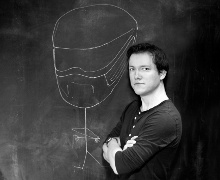

Velkommen!
Torsdag 11. august er det klart for sommerutgaven av Iteratekonferansen 2016 på Holmen Fjordhotell i Asker.
Det blir mingling og kaffe fra 8:30.
Hovedsalen
Starter
Sal 2
Welcome words
08:50
Service workers - smartere caching og nettverk for webapplikasjoner
11:50
Positive erfaringer og lærdom gjort fra et prosjekt som måtte bli levert innen tid og budsjett
Being the change
16:00
08:50 - 09:00
09:00 - 09:30
7 habits of highly effective people
Rune og Mari tar for seg de 7 vanene fra boken skrevet av Stephen Covey og relaterer de til konsulentfaget og hvordan vi kan bli ansett som enda litt bedre hos våre kunder.
09:30 - 10:00
Spotify or: How I learned To Stop Worrying And Hack The Platform
Denne lyntalen vil være delt opp i 2 deler. Del 1 handler om hvordan jeg skrev en loader som modifiserte desktop applikasjonen og gjorde den reklamefri.
Del 2 vil omhandle en liten MITM metode som gjorde det mulig å laste ned musikken fra Web applikasjonen til Spotify.
10:00 - 10:15
Pause
10:15 - 10:25

Slepp bermen løs!
Programmer anarchy er en rimelig fersk post-agile "utviklingsmetodikk". Har hatt suksess i innovasjonshungrige domener hvor time-to-market er viktig.
Stort fokus på selvorganisering og teamsammensetning. Talken blir essensielt en "Wtf is Programmer Anarchy?".
Pitching 101
Det er en vanlig oppfatning at pitching er det samme som salg. Pitching handler om å få menneskers oppmerksomhet før du leverer budskapet ditt. Salg handler om å knytte en kommersiell deal til en pitch. Få inspirasjon til å lære om hvordan man får folks oppmerksomhet og holder på den.
10:30 - 10:40
ROM hacking
Introduction to ROM hacking old console games with examples and basic techniques
Din første pull request
"Feel free to submit a pull request". Noen vil kalle det en invitasjon, men for mange er det vanskelig og skummelt. Denne lyntalen vil gi en rask introduksjon til hvor enkelt, ufarlig, og givende kan være å gi tilbake til miljøet.
10:45 - 10:55
Få kontroll over avhengighetene dine
I denne lyntalen vil jeg gi noen tips til hvordan man i større grad kan få kontroll over npm-avhengighetene sine. Ytterligere detaijer TBA.
Pakkeparanoia
Alle fikk vel med seg den legendariske "Left-pad"-krisen tidligere i år. Etter det har pakkeproblematikken vært veldig aktuell. Er vi blitt for late? Stoler vi for blindt på at andre skal gjøre jobben sin? Svaret er JA. Pakkeparanoia er en reell ting og jeg skal prøve å banke litt paranoia i dere alle. For the greater good!
10:55 - 11:10
Pause
11:10 - 11:20
CSS modules
Modulær og gjenbrukbar CSS!
- Ingen flere konflikter - Eksplisitte avhengigheter - Slutten på globalt skop.

Hvordan lage et læringsspill: Balansen mellom læring og underholdning
Dataspill begynner for alvor å tre inn i utdanning, og læringsspill utvikles som aldri før. For at spillet ditt skal lykkes er det viktig at spillerne både lærer noe, og har det gøy samtidig. Dette er en balansegang overraskende mange utviklere glemmer eller ikke får til, som resulterer spill som enten er for kjedelige, eller spill man ikke lærer noe av.
Denne lyntalen vil gå gjennom teorien bak viktige prinsipper i spillutvikling, samt fallgruvene det er viktig å unngå. //Kan utvides til et 30min foredrag mer rettet mot teknologi i utdanning generelt, teori bak gamification, læringsspill mot spesielle målgrupper, osv.
11:24 - 11:34
Some swift shit
På grunn av EM 2016 henger jeg etter i forhold til wwdc (apple konferanse). Derfor er det umulig å kunne gi en god beskrivelse på dette tidspunktet.
Intro til Relay
Relay er et rammeverk som binder sammen React og GraphQL. Hvordan fungerer det? Hvilke fordeler og ulemper gir det?
11:37 - 11:47
Har vi mikrotjenester ?
Hos SPK beveger vi oss bort i fra en monolitisk-applikasjon og mot noe som kanskje blir en arkitektur basert på mikrotjenester.
Lyntale om hva som kjennetegner mikrotjenester og hvordan det passer med det vi gjør hos SPK. Som kanskje besvarer spørsmålet om vi kan si vi har mikrotjenester.

Typescript
De fleste har hørt om det, men kanskje ikke brukt det selv. Vi ser litt på syntax og hvorfor man vil bruke det.
11:50 - 12:00
Service workers - smartere caching og nettverk for webapplikasjoner
Progressive webapps er på vei inn - og vi overhører snakk om service workers ved kaffemaskinen, men hva er det egentlig?
Service workers er dynamiske proxier som sitter mellom webapplikasjoner, cache og nettverk. Vi kan styre nettverkstrafikk inn og ut, levere innhold raskere, håndtere push varslinger, støtte offline bruk og mye mer. Vi graver litt i denne teknologien og ser på hvordan dette fungerer og hvorfor vi bør bruke det.

Positive erfaringer og lærdom gjort fra et prosjekt som måtte bli levert innen tid og budsjett
Fra å ha vært med på prosjektleveranser som har gått skeis så var det veldig tilfredsstillende å kunne være med på et prosjekt som ble levert med en god tidsmargin og penger til overs som ble brukt på å feire prosjektgjennomføringen før vi hadde gått ut i produksjon.
Denne lyntalen kommer til å ta for seg hvordan vi klarte dette, hvorfor vi klarte det og lærdommen jeg fikk på hva jeg ønsker å ta med meg videre til neste prosjekt og hva jeg kommer til å luke bort.
12:00 - 13:00
Pause
13:00 - 13:30

Hjelp, vi skal kode funksjonelt i Java!
Java 8 åpnet slusene for funksjonell programmering (FP) i Java, men verktøykassen som følger med JDKen er ganske mangelfull. Man har ingen støtte for immutable objekter og datastrukturer, som er helt essensielt innen FP og hjelper deg å fjerne en rekke typer kodefeil. I tillegg mangler for eksempel mer høynivå mekanismer for parallellisering av oppgaver.
I dette foredraget vil vi gå igjennom et utvalg av tredjepartsbiblioteker som du kan ta i bruk for å bøte på disse problemene og gjøre Java-koden din ennå mer sikker og funksjonell!
Pockito.js
Pockito.js er et minimalistisk rammeverk for å håndtere app-state i javascript og kan være et godt alternativ til Flux og Redux.
Pockito har fokus på at det skal være enkelt å komme igang. Samtidig legger Pockito til rette for å få en oversiktlig og godt dokumentert app-state selv når kompleksiteten vokser. I tillegg er Pockito tilpasset til å fungere spesielt godt sammen med React. Presentasjonen vil introdusere Pockito og hvilke fordeler det gir, og vi vil se på likheter og forskjeller mellom Pockito og Redux. Hvis det blir tid skal vi ta for oss noen eksempler på hvordan Pockito kan brukes sammen med React og Firebase. For å få mest ut av presentasjonen er det en fordel å ha jobbet med JavaScript. Sjekk gjerne ut prosjektet på github.com/arnemahl/pockito.
13:30 - 14:00
Kan Rust gjøre webutvikling raskt, sikkert og effektivt
Programmeringsspråket Rust sies å være like raskt som C++, like sikkert som Haskell og like gøy å kode i som Python. Kan dette stemme? Kan Rust som server-side webutviklingsspråk være like enkelt å kode i som node.js, men mye raskere og sikrere? Jeg skal ta en gjennomgang av basic Rust, prøve å besvare noen av disse spørsmålene, og vise hva som finnes av verktøy for webutvikling i rust i dag.
(PS: Om det ikke er plass til et foredrag, kan jeg også ta en lyntale med litt mindre innhold)
Nightmare (?) on Elm Street
Elm er et relativt nytt, funksjonelt språk for frontend-utvikling, som både store og små utviklere har latt seg begeistre over. Men hvor godt funker det i praksis?
Tidligere har vi tatt for oss Elm sin filosofi, syntaks og features. I dette foredraget ser vi på et mer realistisk eksempel, der vi lager en enkel web-app og ser hvordan alt henger sammen. For de som ikke har sett på Elm før, fortvil ikke. Det viktigste blir repetert og forklart underveis. Dette foredraget er ment som en intro til Elm, men med et praktisk fokus.
14:00 - 14:15
Pause
14:15 - 14:45
Alt du ikke visste om Chrome Developer Tools
Chrome Developer Tools er tilgjengelig i alle Chrome installasjoner, men få kjenner til alle mulighetene. Å se på DOM elementer og lese console output er kjent for mange, men den kan også brukes som editor, analysere ytelse og finne minnelekasjer. Etterhvert som Javascript-applikasjoner blir mer komplekse blir avansert bruk av Chrome Developer Tools nødvendig for å skjønne hvordan applikasjonen fungerer.
Javaslang : Funksjonell programmering i Java
Nye open source biblioteker tar Java små skritt i riktig retning. Flere konsepter fra Guava og JodaTime er nå del av Java 8 og behovet for disse bibliotekene er nå nesten borte. Men selv om Java 8 introduserte flere funksjonelle konsepter har det fortsatt sine mangler. Javaslang er et elegant bibliotek for Java 8 som tar funksjonell Java til et nytt nivå.
14:45 - 15:15
SCIENCE! It works!
Redd for å refaktorere kode? Er du usikker på om din nye versjon gir det samme resultatet, eller om den egentlig er bedre med lasten dere opplever i produksjon.
Med Science trenger du ikke lure! Kjør den gamle og nye koden i parallell! *insert science meme gif here*
Designmetode. Lean Startup vs. Design Thinking
Mine erfaringer som mangeårig designer på digitale prosjekter. Hva er egentlig designmetode? Kan den være smidig? Hvordan få design og utvikling til å spille sammen, og hva har dette å gjøre med Sprint-boka til Google Ventures?
15:15 - 15:30
Pause
15:30 - 15:42

Tre måneder på egen hånd
Lurer du på:
Hva er forskjellen på å være konsulent og drive sitt eget prosjekt? Er det en fordel å jobbet i et selskap som Iterate når man skal drive med innovasjon? Hva man lærer av å drive sitt eget prosjekt? .... ? Dette er ting jeg vil prøve å gi deg svar på.
15:45 - 16:00
Å jobbe i Norge som en utlending
Hvordan de som kommer fra en andre land finner arbeidsmiljøet i Norge? Hvordan er det å jobbe som (nesten) den eneste utenlandske i en Norsk firma? Hva er de barriere som mann møter i hverdagene? Du får en tur rund opplevelser knyttet til jobb og arbeidsmiljø - fra en utlending synspunkt. Illustrert med tegneserier.
16:00 - 16:30
Being the change
Agile er broken. De "gamle" selskapene - de som eksisterte før internettrevolusjonen - jobber stadig ekstremt ineffektivt. Det mest tydelige tegnet er hva som skjer når nye startups utfordrer dem med sine produkter. Det disruptive etegildet i de gamle selskapenes markedsandeler er det største beviset på at dagens paradigmer innen organisering og virksomhetsstyring er grunnleggende galt.
Lenge har man trodd at agile / smidig var løsningen, men i virkeligheten gjør ofte smidig tankegang vondt til verre. (Det har kanskje blitt mer behagelig å være utvikler, men selskapene går fortsatt dukken, en etter en.) Hva er fordelene med å hjelpe de gamle selskapene vinne terreng? (Kan vi ikke bare la dem gå under?) Hvordan må banker, forsikringingsselskaper, medieselskaper, produksjonsindustri og konsulenthus forvandle seg, og har de mulighet til å bli den nye store endringen, der dyktige kunnskapsarbeidere igjen får slippe til skaperkraften? Caser fra Lego, Amedia, Telenor, mm.